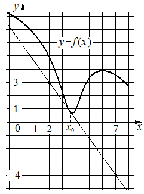

Авторский разбор и аудит предварительны; внешней экспертизы нет.
Модель автора: claude-opus-5-5 (opus; effort=low); в основных частотах: True ·
Впишите правильный ответ.
На рисунке изображены график функции и касательная к нему
в точке с абсциссой Найдите значение производной функции
в точке

КЭС: 4.1 Производная функции. Производные элементарных функций; 4.2 Применение производной к исследованию функций на монотонность и экстремумы. Нахождение наибольшего и наименьшего значения функции на отрезке
-1,4
| ID / вход | Действие | Результат | Локальные KC |
|---|---|---|---|
| s1 · condition | Определить по рисунку две точки касательной с целочисленными координатами | (2; 3) и (7; -4) | kc1 |
| s2 · s1 | Вычислить угловой коэффициент касательной по двум точкам | k = (-4-3)/(7-2) = -1,4 | kc2 |
| s3 · s2, condition | Применить геометрический смысл производной: f'(x0) равна угловому коэффициенту касательной | f'(x0) = -1,4 | kc3 |
[
{
"id": "m1",
"name": "Производная через угловой коэффициент касательной по двум точкам сетки",
"step_ids": [
"s1",
"s2",
"s3"
]
}
]По изображению прямой на координатной сетке выбрать точки, лежащие на прямой в узлах сетки, и записать их координаты.
{
"local_kc_id": "kc1",
"status": "match",
"catalog_kc_id": "graph_coordinates",
"evidence": [
{
"ref": "step:s1:action",
"quote": "Определить по рисунку две точки касательной с целочисленными координатами"
},
{
"ref": "step:s1:result",
"quote": "(2; 3) и (7; -4)"
},
{
"ref": "image:assets/f5f8454ec6265fd9fca4d17b.png",
"region_description": "На прямой-касательной отмечены жирные точки в узлах сетки: одна при x=2 на уровне подписи 3 оси y, другая при x=7 на уровне подписи -4; масштаб сетки задан подписями 0,1,2,7 и 1,3,-4."
}
],
"context_refs": [
"condition"
],
"alternatives_checked": [
{
"catalog_kc_id": "literal_f253b50b98a1",
"reason": "Восстановление коэффициентов прямой — последующее действие, не чтение координат."
}
],
"rationale": "Считывание координат отмеченных точек по сетке с подписанным масштабом полностью соответствует определению graph_coordinates; точки на рисунке отмечены явно.",
"proposal": null,
"blocking": false,
"issue_ids": []
}По координатам двух различных точек невертикальной прямой найти k как отношение приращения ординаты к приращению абсциссы.
{
"local_kc_id": "kc2",
"status": "new_candidate",
"catalog_kc_id": null,
"evidence": [
{
"ref": "step:s2:action",
"quote": "Вычислить угловой коэффициент касательной по двум точкам"
},
{
"ref": "step:s2:result",
"quote": "k = (-4-3)/(7-2) = -1,4"
}
],
"context_refs": [
"step:s1:result"
],
"alternatives_checked": [
{
"catalog_kc_id": "literal_f253b50b98a1",
"reason": "Требует найти оба коэффициента y=kx+b; здесь вычислен только k, b не находится — действие-компонент, не полное соответствие."
},
{
"catalog_kc_id": "direct_proportion",
"reason": "Касается y=kx по одной точке; прямая не проходит через начало координат."
}
],
"rationale": "Операция — отношение приращений ординаты и абсциссы двух точек невертикальной прямой; в каталоге есть только более широкий узел восстановления всей линейной функции.",
"proposal": {
"name": "Вычислять угловой коэффициент прямой по двум точкам",
"definition": "По двум точкам с разными абсциссами найти k=(y2-y1)/(x2-x1) без нахождения свободного члена; вертикальная прямая исключена."
},
"blocking": false,
"issue_ids": []
}Значение производной в точке касания приравнять угловому коэффициенту касательной к графику в этой точке; касательная невертикальна.
{
"local_kc_id": "kc3",
"status": "new_candidate",
"catalog_kc_id": null,
"evidence": [
{
"ref": "step:s3:action",
"quote": "Применить геометрический смысл производной: f'(x0) равна угловому коэффициенту касательной"
},
{
"ref": "step:s3:result",
"quote": "f'(x0) = -1,4"
}
],
"context_refs": [
"condition",
"step:s2:result"
],
"alternatives_checked": [
{
"catalog_kc_id": "literal_9aee0783618d",
"reason": "Чтение знака производной по графику производной, а не значения через касательную."
},
{
"catalog_kc_id": "derivative_monotonicity",
"reason": "Вывод о монотонности по знаку производной, другая операция."
},
{
"catalog_kc_id": "literal_6308771d01a6",
"reason": "Подстановка в формулу функции; формулы f нет."
}
],
"rationale": "Приравнивание f'(x0) угловому коэффициенту невертикальной касательной в точке касания; подходящего узла в каталоге нет.",
"proposal": {
"name": "Применять геометрический смысл производной",
"definition": "Значение производной в точке касания приравнять угловому коэффициенту невертикальной касательной к графику в этой точке."
},
"blocking": false,
"issue_ids": []
}[ "Точки (2; 3) и (7; -4) отмечены на рисунке; координаты прочитаны с изображения." ]
[]
{
"author_path": "data/annotation/runs/2026-11-09-fipi-team-bogdan108-next-100/raw/author/D00D6F.json",
"auditor_path": "data/annotation/runs/2026-11-09-fipi-team-bogdan108-next-100/raw/auditor/D00D6F.json",
"accepted_after_review": null
}